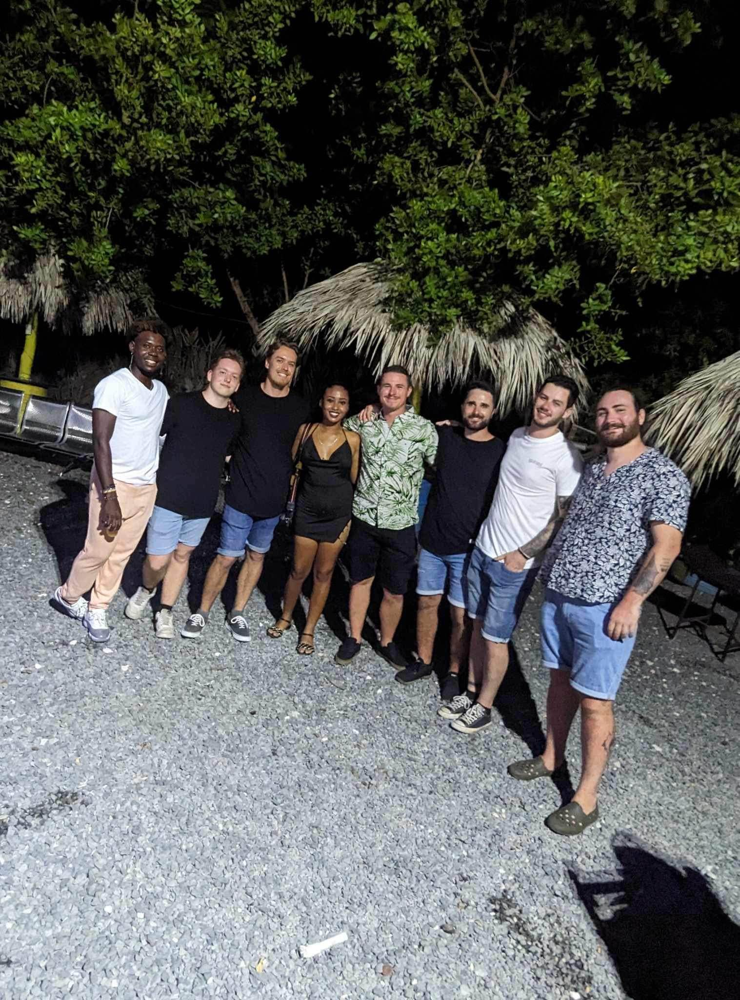
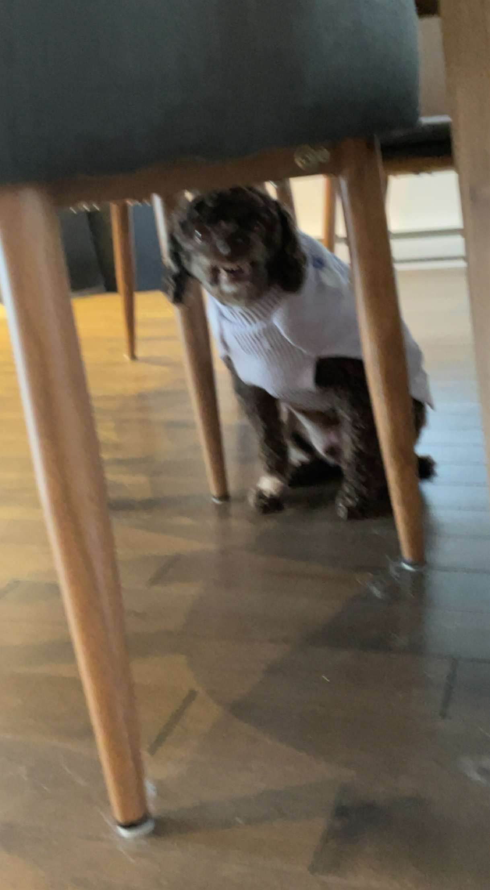
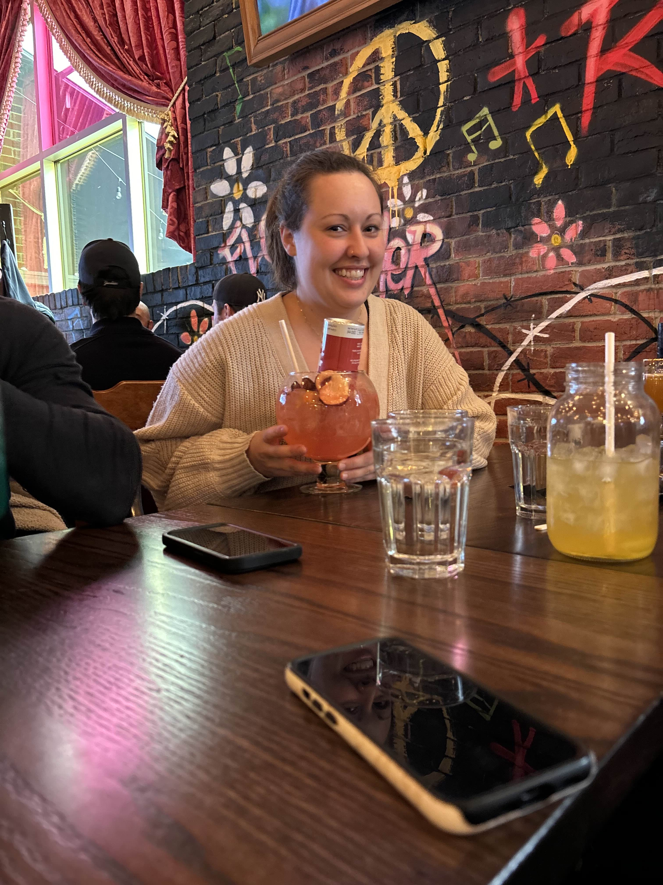

Voici mon neveu, son nom est mavrick et il a 2 ans et demi. Je l'aime de tout mon coeur, malgré
qu'il est assez turbulant! Mavrick est le fils de ma grande soeur Camille. Donc, je suis son parrain
et son oncle.

En Avril 2024, je suis parti en voyage en République Dominicaine. J'ai fais ce voyage en honneur du
mariage a mon frère. C'était un peu comme un enterement de vie de garçon. J'ai beaucoup voyager dans
ma vie, mais ce voyage était probablement lui que j'ai préféré le mieux. Nous étions 6 hommes dans
un tout-inclu, vous pouvez vous imaginez le reste de l'histoire.

Ce que vous pensez être un monstre est en fait mon chien. Son nom est Bobby et c'est l'amour de ma
vie. J'ai Bobby depuis mes 10-11 ans et il est resté avec moi tout ce temps. Oui, il semble pas très
sympatique, mais je jure qu'il est adorable.

Ma soeur Camille... Ma soeur est une personne extraordinaire! Premièrement, elle m'a donner le
meilleur cadeau au monde, mon neveu Mavrick. Camille est toujours là pour moi, c'est comme ma
meilleure amie. Fun fact!: j'ai été élever avec ma soeur, sauf que nous avons pas le même père. Par
contre, je ne la considère pas moindrement que ma soeur de sang.